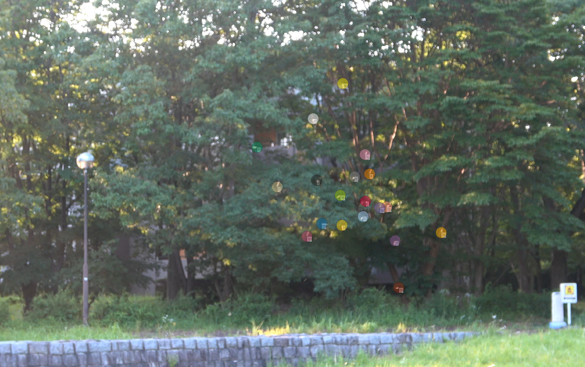
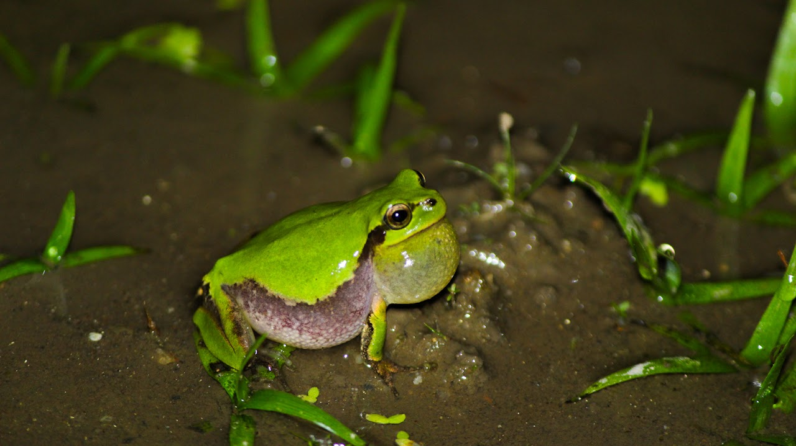

ユスリカが蚊柱を維持する様子を解析しています。一見不規則な動きをしているように見えながらも，外乱の中で一定の場所に留まる蚊柱の様子の解析、モデル化を通じてメカニズムを調べていくことに取り組んでいます。

他にも共同研究としてカエルの同期現象の解明のための実験を行ったりしています。
この度はポスター発表をご覧頂きありがとうございます。もしご意見ご指摘がありましたらご記入いただけますと幸いです。
生態学会が終了した後のお問い合わせはメールで対応いたします。
フォームURL↓
https://docs.google.com/forms/d/e/1FAIpQLSf_FEDPGhkXqIehkAGBdpJQ_P9pBxjB_EVrmOg2_aJrSlI74A/viewform生態学会終了後のご連絡はこちらにお願いいたします。
個人Email: suisui0714[at]gmail.com
研究室Email: aiharagrouput[at]gmail.com
筑波大学システム情報系：カエル研究室
https://sites.google.com/view/acsrg-aihara